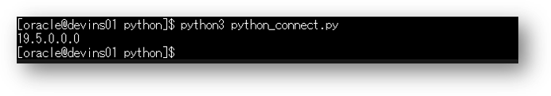
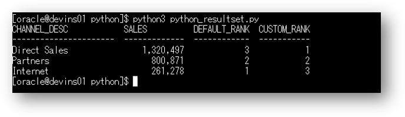

Pythonとは、汎用のプログラミング言語である。コードがシンプルで扱いやすく設計されており、C言語などに比べて、さまざまなプログラムを分かりやすく、少ないコード行数で書けるといった特徴がある。（ウィキペディアより引用）
PythonでAutonomous Databaseを利用する際には、cx_Oracleというモジュールを利用します。
尚、Python言語自体の使い方を説明するものではありません。
所要時間 : 約10分
前提条件 :
- ADBインスタンスが構成済みであること
※ADBインタンスを作成方法については、本ハンズオンガイドの 101:ADBインスタンスを作成してみよう を参照ください。 - 開発用の仮想マシンが構成済みであり、仮想マシンからADBインスタンスへのアクセスが可能であること
- 仮想マシンのoracleユーザのホームディレクトリ配下にlabsフォルダをアップロード済みであること
- labs.zip をダウンロード
アップロード方法については こちら をご確認ください。
- labs.zip をダウンロード
目次
1. ADBに接続してみよう
まずPythonでADBに接続し、ADBのバージョンを確認してみます。
尚、事前にこちらを実施し、SQL*plusで接続できていることを前提に記載しています。
-
Tera Termを利用してopcユーザで仮想マシンにログインします。
-
oracleユーザにスイッチします。一旦rootユーザに切り替えてから、oracleユーザに切り替えます。
-- rootユーザにスイッチ sudo -s -- oracleユーザにスイッチ sudo su - oracle -
ADBへの接続情報をOS環境変数として設定します。
export TNS_ADMIN=/home/oracle/labs/walletsexport ORAUSER=adminexport ORAPASS=Welcome12345#export ORATNS=atp01_lowexport WALLETPASS=Welcome12345# -
サンプルスクリプトが配置されているディレクトリに移動します。
cd ~/labs/python -
（必要に応じて）python_connect.pyの中身を確認します。
cat python_connect.py接続に必要なモジュール(os、oracledb)をロード、定義された環境変数に従いADBに対する接続を作成、ADBのバージョンを取得する という内容です。
※python_connect.pyの中身は次の通りです。import os import oracledb un = os.environ.get('ORAUSER') pw = os.environ.get('ORAPASS') cs = os.environ.get('ORATNS') wallet_dir = os.environ.get('TNS_ADMIN') wallet_pw = os.environ.get('WALLETPASS') conn = oracledb.connect(user=un, password=pw, dsn=cs, config_dir=wallet_dir, wallet_location=wallet_dir, wallet_password=wallet_pw) print(conn.version) conn.close() -
実行します。実行する際には、~/labs/pythonに移動していることを確認し、python3で実行していることにご注意ください。
python3 python_connect.py次の出力結果のように、5桁の数字（ADBのバージョン）が表示されたらOKです。

2. ADB上のデータを操作してみよう
次に実際にサンプルのクエリを実行し、結果を確認してみましょう。
-
サンプルスクリプトが配置されているディレクトリに移動します。
cd ~/labs/python -
（必要に応じて）OS環境変数の内、接続サービスを設定しなおします。
ここではサンプルクエリとして分析系のクエリを実行するため、分析系クエリを実行する際の推奨の接続サービスであるMEDIUMを指定します。
export ORATNS=atp01_medium -
（必要に応じて）python_resultset.pyの中身を確認します。
cat python_resultset.pyADBへの接続処理、分析系のクエリを実行、結果セットの表示、接続のクローズ処理といった一連の流れを実行しています。
※python_resultset.pyの中身は次の通りです。import os import oracledb un = os.environ.get('ORAUSER') pw = os.environ.get('ORAPASS') cs = os.environ.get('ORATNS') wallet_dir = os.environ.get('TNS_ADMIN') wallet_pw = os.environ.get('WALLETPASS') try: conn = oracledb.connect(user=un, password=pw, dsn=cs, config_dir=wallet_dir, wallet_location=wallet_dir, wallet_password=wallet_pw) sql="""SELECT channel_desc, TO_CHAR(SUM(amount_sold),'9,999,999,999') SALES$, RANK() OVER (ORDER BY SUM(amount_sold)) AS default_rank, RANK() OVER (ORDER BY SUM(amount_sold) DESC NULLS LAST) AS custom_rank FROM sh.sales, sh.products, sh.customers, sh.times, sh.channels, sh.countries WHERE sales.prod_id = products.prod_id AND sales.cust_id = customers.cust_id AND customers.country_id = countries.country_id AND sales.time_id = times.time_id AND sales.channel_id = channels.channel_id AND times.calendar_month_desc IN ('2000-09','2000-10') AND country_iso_code = :country_code GROUP BY channel_desc""" cursor = conn.cursor() cursor.execute(sql, country_code = 'US') print("CHANNEL_DESC SALES DEFAULT_RANK CUSTOM_RANK") print("---------------------- ------------- ------------ -----------") for column_1, column_2, column_3, column_4 in cursor.fetchall(): print(str(column_1).ljust(22), str(column_2).rjust(11), " ", str(column_3).rjust(10), " ", str(column_4).rjust(9)) except oracledb.DatabaseError as exc: err, = exc.args print("Oracle-Error-Code:", err.code) print("Oracle-Error-Message:", err.message) finally: cursor.close() conn.close() -
クエリを実行します。python3で実行していることにご注意ください。
python3 python_resultset.py次の出力結果のように、3件の結果セットが返ってくればOKです。

以上で、この章の作業は終了です。
次の章にお進みください。